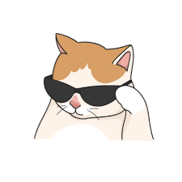

Meet Bella

Bella was rescued from a shelter and now lives a happy life with her new family. She loves to play fetch and cuddle on the couch!
Sharing my love for pets and their stories

Bella was rescued from a shelter and now lives a happy life with her new family. She loves to play fetch and cuddle on the couch!
 Max found his forever home after being fostered for several months. He enjoys going on long walks and exploring the great outdoors.
Max found his forever home after being fostered for several months. He enjoys going on long walks and exploring the great outdoors.
Choose high-quality pet food suitable for your pet's age, size, and health. Always provide fresh water.
Schedule regular vet visits to ensure your pet stays healthy and up-to-date on vaccinations.
Regular exercise is vital for your pet's physical and mental health. Make time for play and walks daily!
I am Terry Sharon, a passionate animal lover and pet owner. This blog is my way of sharing my experiences and tips on pet care. Join me as we celebrate the joy pets bring to our lives!